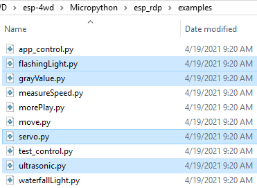

Code Control¶
In this chapter you will learn to control the ESP-4WD car with MicroPython codes.
You can copy the code below into the Arduino IDE or directly open the code fileunder the path esp-4wd\Micropython\esp_rdp\examples.
The following code files have been used in the chapter Test the Components with MicroPython , just for simple testing of motor, ultrasonic module, Grayscale Sensor Module, 8-bit RGB board and Servo.
Here, we focus on the measureSpeed.py, waterfallLight.py and morePlay.py.
In addition, the app_control.py and test_control.py code files are used in the APP Control chapter, and will not be explained here.
waterfallLight¶
After running waterfallLight.py, the LEDs on the 8-bit RGB board under the car will turn on in random colors from the first to the 24th, and then turn off one by one from both ends to the middle.
After that, the RGB lights will turn on in random colors from the 24th to the first, and then turn off one by one from both ends to the middle.
import esp32_rdp as car
import random
import time
def main():
while True:
color = [random.randint(0,255),random.randint(0,255),random.randint(0,255)]
noColor = []
for i in range(24):
car.set_num_color(i,color)
time.sleep_ms(20)
for i in range(23,11,-1):
j = 23-i
car.set_num_color(i, noColor)
car.set_num_color(j, noColor)
time.sleep_ms(40)
for i in range(23,0,-1):
car.set_num_color(i,color)
time.sleep_ms(20)
for i in range(23,11,-1):
j = 23-i
car.set_num_color(i,noColor)
car.set_num_color(j,noColor)
time.sleep_ms(40)
try:
main()
finally:
car.set_light_off()
The sentence to light up the LED is car.set_num_color(i, red, green, blue); the first
parameter is the number of the light, and the last three parameters are the RGB value.
For example, car.set_num_color(4,255,0,0) means to make the No. 4 LED light up in
red.
{kind=link}
measureSpeed¶
Run measureSpeed.py , the car will move at a random speed, and the 2-ch Photo-
interrupter Module will detect the speed of the car.
The light emitted from the transmitting end of the 2-ch Photo-interrupter module
to the receiving end will pass through the Encoding Disk (with 20 holes). When
the receiving end does not receive the light, it will send a 0 to the microcontroller,
otherwise it will send a 1.
This means that when a total of 20 1 are detected, the wheel of the car has turned one
round (a distance of the wheel circumference has been traveled forward).
In the same way, we can detect the frequency of the 1 received by the
microcontroller and calculate the speed of the car in cm/s.
import esp32_rdp as car
import random
import time
speed = car.Speed(26, 25)
def main():
while True:
car.move("forward",random.randint(0,100))
time.sleep(1)
carSpeed = speed.get_speed()
print('distance:%d' % carSpeed)
try:
main()
finally:
car.move("stop")
morePlay¶
Run morePlay.py , this example provides 4 ways to play ESP-4WD car. You can switch
between different modes by modifying the value of the variable mode.
import esp32_rdp as car
mode = 1
def main():
while True:
global mode
if mode == 1:
car.avoid(40,30)
elif mode == 2:
car.follow(40,30)
elif mode == 3:
car.is_on_edge(110)
elif mode == 4:
car.track_line(400,50)
try:
main()
finally:
car.move("stop")
Function Introduction of morePlay¶
Note
For how the following 4 functions implement the corresponding functions, please refer to esp32_rdp.py under the path esp-4wd\Micropython\esp_rdp\src.
avoid()
The default mode(mode=1) is obstacle avoidance.
avoid(int ref, int speed)
refrefers to the reference distance value.speedrefers to the forward speed.
ESP-4WD car will move forward at 30% speed and return the distance state according to the obstacle in front.
If distance > 40, return the distance state 2, if distance > 10, then return 1, otherwise it will return 0.
If the obstacle distance is greater than 40, the car will move forward, otherwise it will turn right.
follow()
Modify the value of the mode variable to 2 so that the mode is set to follow.
follow(int ref, int speed)
refrefers to the reference distance value.speedrefers to the forward speed.
ESP-4WD car will move forward at 30% speed and automatically follow objects within 40cm in front.
is_on_edge()
Modify the value of the mode variable to 3 so that the mode is set to cliff detection.
is_on_edge(int ref)
refrefers to the reference gray value.
When ESP-4WD car detects a cliff (a place where the grayscale sensor’s detection value is below 110), it will retreat a certain distance.
track_line()
Modify the value of the mode variable to 4 so that the mode is set to track line.
track_line(int ref, int speed)
refrefers to the reference gray value.speedrefers to the forward speed.
Note
You can replace ``ref``(400) with another number, which is the threshold between the black line and the white ground read by the grey scale sensor.
The ESP-4WD car moves along the black line on the white ground.